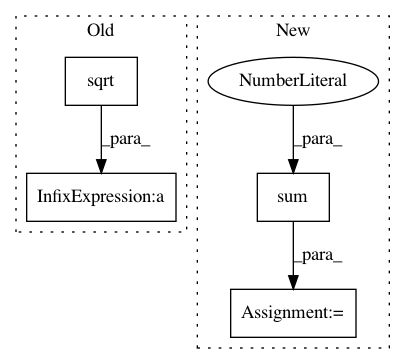

168376f336b49afeaeeac2fc04590560e6d95905,torch_geometric/transform/sample_pointcloud.py,SamplePointcloud,__call__,#SamplePointcloud#Any#,12
Before Change
def __call__(self, data):
triangles = data.faces
probs = np.sqrt((np.cross(triangles[:, 1, :] - triangles[:, 0, :],
triangles[:, 2, :] - triangles[:, 0,
:]) ** 2).sum(
axis=1)) / 2.
probs /= probs.sum()
sample = torch.LongTensor(np.random.choice(np.arange(len(triangles)),
size=self.num_points,
After Change
def __call__(self, data):
t = data.faces
probs = np.cross(t[:, 1, :] - t[:, 0, :], t[:, 2, :] - t[:, 0, :])**2
probs = np.sqrt(probs.sum(axis=1)) / 2.
probs /= probs.sum()
sample = torch.LongTensor(
np.random.choice(np.arange(len(t)), size=self.num_points, p=probs))
In pattern: SUPERPATTERN
Frequency: 3
Non-data size: 4
Instances
Project Name: rusty1s/pytorch_geometric
Commit Name: 168376f336b49afeaeeac2fc04590560e6d95905
Time: 2018-04-08
Author: matthias.fey@tu-dortmund.de
File Name: torch_geometric/transform/sample_pointcloud.py
Class Name: SamplePointcloud
Method Name: __call__
Project Name: librosa/librosa
Commit Name: b835d5b330dad5cb9cb38597f2d1969946d8b48b
Time: 2018-02-10
Author: brian.mcfee@nyu.edu
File Name: librosa/core/constantq.py
Class Name:
Method Name: icqt
Project Name: nilearn/nilearn
Commit Name: 6704c535b8c59ab3b9b98c0489a051654c1ee727
Time: 2013-04-05
Author: philippe.gervais@inria.fr
File Name: nisl/signals.py
Class Name:
Method Name: _standardize